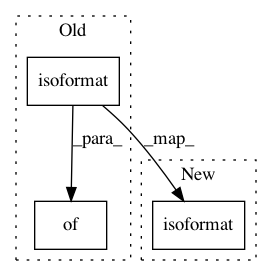

9adae3fb5a4b6fe785e7d896592ccf583681d376,tensorlayer/files/utils.py,,save_hdf5_graph,#Any#Any#Any#Any#,153
Before Change
model_config = network.config // net2static_graph(network)
model_config_str = str(model_config)
customized_data_str = str(customized_data)
version_info = {
"tensorlayer_version": tl.__version__,
"backend": "tensorflow",
"backend_version": tf.__version__,
"training_device": "gpu",
"save_date": datetime.datetime.utcnow().replace(tzinfo=datetime.timezone.utc).isoformat()
}
version_info_str = str(version_info)
with h5py.File(filepath, "w") as f:
f.attrs["model_config"] = model_config_str.encode("utf8")
After Change
logging.info("[*] Saving TL model into {}, saving weights={}".format(filepath, save_weights))
model_config = network.config // net2static_graph(network)
model_config["version_info"]["save_time"] = datetime.datetime.utcnow().replace(tzinfo=datetime.timezone.utc).isoformat()
model_config_str = str(model_config)
customized_data_str = str(customized_data)
// version_info = {
// "tensorlayer_version": tl.__version__,
In pattern: SUPERPATTERN
Frequency: 3
Non-data size: 3
Instances
Project Name: tensorlayer/tensorlayer
Commit Name: 9adae3fb5a4b6fe785e7d896592ccf583681d376
Time: 2019-06-06
Author: 37874862+warshallrho@users.noreply.github.com
File Name: tensorlayer/files/utils.py
Class Name:
Method Name: save_hdf5_graph
Project Name: nilmtk/nilmtk
Commit Name: ad8b2134134404d909324f35381e51908a1d3c10
Time: 2014-11-20
Author: jack-list@xlk.org.uk
File Name: nilmtk/timeframe.py
Class Name: TimeFrame
Method Name: to_dict
Project Name: home-assistant/home-assistant
Commit Name: 8e7f500f28332d218dcfa1b316279d5822127d95
Time: 2018-04-29
Author: escoand@users.noreply.github.com
File Name: homeassistant/components/weather/demo.py
Class Name: DemoWeather
Method Name: forecast